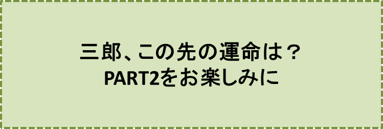

と記されているではありませんか。
“どうやら、日本語が通じる国らしい……”
私は、つぶやきながら、歩き続けます。
やがて、麦畑らしい風景、幾つもの小川が、目に入り始めました。
雲一つなく晴れ上がった大空に、お日様が、半分ほどの高さに駆け上がっています。
シオニー村の女性達でしょうか、川で洗濯などをしながら、ちょっとしたことに笑いこけています。
大地に鍬を加える男性達は、鍬の先で日の光が、チカッ、チカッ、光るのを見ると、たまらなく愉快になって、思わず笑いが、こみ上げてくるのでしょうか。
近くで働く人達に、陽気に声をかけながら、仕事に、精を出しています。
こんな時、人は、誰でも
“あゝ、自分は何と幸せなのだろう”
と思って、大地をしっかり踏みしめ、お日様に向って、思いっきり、深呼吸するでしょう。
するとあたりは、前よりも一層明るくなって、喉の奥から、思わず歌が、飛び出してきたりするものですよね。
“この国では、誰もが幸せのようだ……”
私は、大きな喜びを感じました。……しかし、同時に
“色々な物語にあるような、冒険の国にも、行ってみたいなあ”
という気持ちが、次第に高ぶってきました。
私はこう思い、この国から、目を、再びジェット機に乗せて、よその国へと向かわせよう、と考えました。
……しかし、まさにこの時です。中背の男が、私の視野に入ってきたのです。
“日本のどこかで見た男だ”
“どこで、だっただろう?”
私は、首をかしげました。年は、私よりもずっと若く、24、5才といったところでしょう。
“どこで、そして、いつ頃会ったのだろう？”
“どうしても思い出したい”
“どうしてこの男が、こんな国に？”
私の好奇心は高まるばかりです。
……そこで、しばらく私は、この国に滞在してみることにしました。そして男の名を、仮に“三郎”と名付けることにしました。
……しかし、後ほど分かったことでしたが、シオニー村の人達も、全く驚くべきことに、この男を三郎と呼んでいたのです。
偶然の一致とは言え、余りにも不思議なことでした……
三郎は、村人達の誰からも好かれておりました。所有する森や土地は、早くにこの世を去った両親から、遺産として譲り受けたものでしたが、この財産によって、この村でも有数の資産家として知られる存在でした。
三郎は、鋼鉄のような身体の持主で、シオニー村でも一番の働き者です。
親から譲り受けた麦畑や野菜畑をせっせと耕し、収入は十分すぎるほどにありました。おまけに、まだ全く手付かずのままで置いてある森や土地の広さは、シオニー村でも一、二を争う広さでした。
人々は
“三郎の将来には、想像もつかぬ程の大きな可能性がある”
と確信して、心の底から、三郎の成長を楽しみにしていました。
三郎は、この広大な森と土地を眺めているだけでは、勿論、ありませんでした。
彼は、二、三度、森に手をつけてみました。
例えば、何本かのスギの木を木材として大々的に売り出してみたりもしました。
しかし、こんな試みが、もたらしてくれる成果は、彼が、所有する土地や森の大きさに比べると、余りにも見劣りがして、この事業から、早早(はやばや)と撤退したのです。
こんな三郎の姿を見かねた、周りの人達が、彼に、森や土地の様々な利用法を教えてくれたのでしたが、どんな心をこめた忠告、助言であっても、彼は、口先だけ礼を述べただけで、腹の底ではこう言ったのです。
“なあーに、もっといい方法があるに違いない。他人の口車に乗って、たまるものか。
森や土地をうまく利用する方法は、そんな生易(なまやさ)しいことではない”
三郎は、この村一番の好青年であり、勤勉家でもありました。
親から譲り受けた御殿のような屋敷も売り払って、三郎は、少しでも森や土地を広げたいと、あらたに土地や森を購入していました。
所有する森や土地の広さは、こんなことで、村一番であったでしょう。
人々は、こんな可能性の大きい彼が、屋敷を売り払った後は、こゝ何年も、畑の近くにこしらえた粗末な小屋のような家に住み続けていることに首をかしげ、
“いい女房に恵まれれば、人も羨(うらや)むような暮らしが、できるようになるであろうに……。勿体ないことだ”
と、とても残念に思うのでした。
三郎は、多くの人達がそうしているように、
“自分の幸福はどのようにして手に入れたら良いのだろうか”
ということを考え続けていました。
しかし、こんな風に考え続けていることを、決して他者に気付かれないように、陽気に人々と一緒に語り、一緒に笑い、どんな人に対しても笑顔を絶やしませんでした。
このため三郎が、有り余る程の大きな森や土地を、殆んど生かさずに放置しておくことにも、
“欲のない性格だから、仕方ないよね”
と、半ば諦め顔で、三郎を見ていたのです。
年を重ねた経験豊かな人達は
“三郎も、もう妻を持つ年頃だ。誰か良い娘が見つかればよいのに……。
だが、あれだけの好青年で、土地や森の資産もたっぷり有るとなると、余程の娘でないと釣り合いが取れないだろう……”
と言って、ため息をつき
“三郎に、もし欠点があるとすれば、幸福の下準備が出来過ぎているということだろう”
と考えてしまいます。この人達は、幸福の下準備が出来過ぎた人達が辿(たど)る道を、よく知っているのです。
三郎は、何度かいい娘を薦められましたけれど、どんな話にも、首を縦に振ることはありませんでした。
“このシオニー村では、最も大きな幸福が約束されている自分の道、この道が、真っ直ぐ将来に向って延びているというのに、この程度の娘ではつまらない。全くつまらない”
三郎は、こう考えて、村の中心部にある大広場に建立(こんりゅう)されている大きな教会の牧師が、手を合わせるようにして、薦める娘であっても、彼は、丁重にことわりました。
三郎が住んでいるシオニー村は、見渡すかぎり、肥えた大地で覆われています。このためでしょう。誰もが畑をせっせと耕(たがや)しさえすれば、裕福に暮らすことができました。
しかし、人々は、決して現状に甘んじていませんでした。
若者達は、より前向きな姿勢で、自然と共存しつつ、土地や森を有効に利用する方法を考え、実行に移しました。
何人かの若者達が、協力して、森の中に木作りの机や椅子を並べ、溢れんばかりに生い茂る木々そしてこの森に住む鳥達と、人々がお話が出来るように、遊歩道をこしらえました。
子供達だけでなく大人達も、自然と親しむことができるようにしたのです。
或る若者達は空地を利用して、乳牛を育て、別の若者達はバターやチーズを作りました。
或るグループの若者達が、立派な果樹園を共同で作ると、別の若者達が、この果樹園で採れた果物から、ジュースやジャムを作りました。
代々譲り受けてきた土地や森を売り払って、遠くの町で起業する者も少なくありませんでした。
一人、取り残されている感じの三郎でしたが、
“森や土地をうまく利用してやろう”
“皆が、びっくりするほどうまく利用してやろう”
と、殆んど毎日のように考えていたのです。
同じ年頃の若者達が、新しい道を、切り拓き、楽しそうに働いているのを見ると、三郎は焦りました。
“森の木、一本一本が金や銀に化ける……。そのぐらいに利用しなければ、私が、いつも望んでいるような幸福は、やってこないかも知れないな……”
三郎は、苦笑いをします。
“それにしても、村人達は、一体、私のことをどんな風に考えているのだろう。
“いい娘だ。とてもいい娘だ。ぜひ会って欲しい”
などと言っておきながら、いざ会ってみると、実につまらぬ娘達ばかりで、私の未来の道が、この私の森、この私の大地そして鋼鉄のようなこの両腕によって、素晴らしく輝かしい道であることが約束されているのに、この道にほんの少しでも幸福をつけたそうという娘は、未だに紹介されたことがない。
私は、ひょっとすると、見下されているのかも知れないな……”
彼は、こんなことを考えながらも、その手は休まず畑仕事をしています。だからこそ、村人達は三郎のことを
“いつも仕事に精を出している村一番の働き者”
と褒めそやすのでしょう。
“三郎は、毎朝、誰よりも早く起き、畑へ出かけ、そして夕方には一番遅く畑から引き揚げてくるのですよ”
と、シオニー村の人達は声を揃えて誇らしげに語ります。
しかし、沢山の村人達はこんな風に思っているでしょう。
“三郎の森や土地は、一体、いつになったら三郎の幸せを築くために、働き始めるのだろう”
と。……しかし、こんな村人達の願い、期待は叶えられることは、決してないでしょう。
どうしてでしょうか。三郎は、森や土地の利用法を、ずっと、考え続けてきましたけれど、余りに長く考え過ぎたために、計画が、頭の中でどんどん大きくなり、夢物語のような膨大な計画になってしまったのです。このため、いざ着手してみても、余りにも現実とその計画の目指すところとが、かけ離れ過ぎていて、手の施しようも無く、途中で頓挫（とんざ）してしまっているのです……。
♪♪♪♪コーヒーブレイク♪♪♪♪
